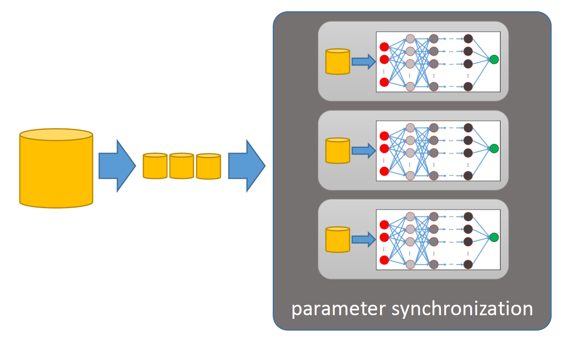
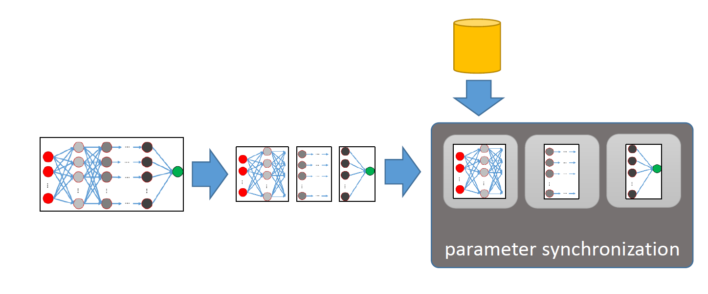
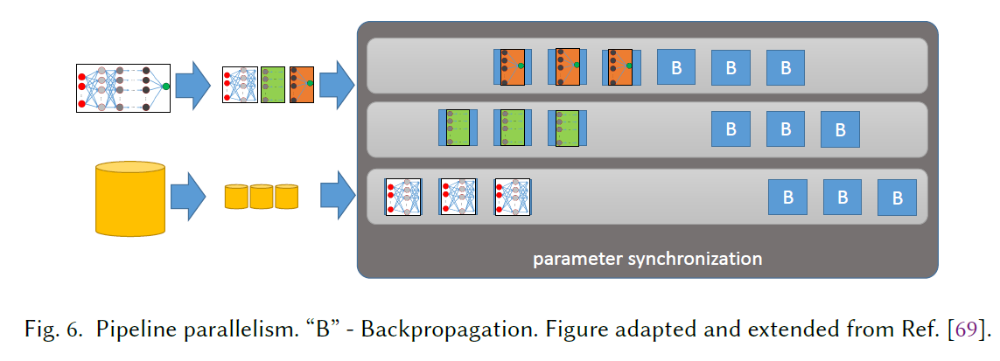
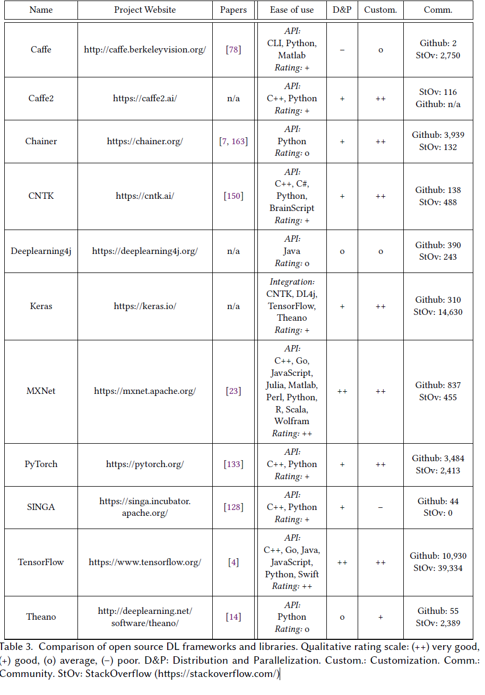

近年来深度学习的成功与数据集的增大以及模型的增大密不可分，当然算力的增强也是先决要素。关于深度学习应用的研究可以说是数不胜数，在各个领域基本都能看到DL的身影。本文是从scalable DL的角度入手，总结了分布式深度学习面临的挑战以及当前学者提出的技术。文章对scalable DL从四个角度进行总结：
- 分布式的infrastructure
- DL 训练时的并行处理方法
- 多租户条件下的资源调度
- 训练数据以及模型数据的管理
survey第一部分和第二部分介绍了一些背景知识，这里就不说了。第三部分是主体部分，即从上诉四个角度总结了近几年的研究成果，第四分布对比了现有的DL 框架在分布式的情况下的优劣势。第五部分是总结和展望。下面我们只分析四个方面的发展。
1. Distributed Infrastructures
在分布式的环境下，infrastructure的研究可以从两个方面入手，单个节点的硬件条件以及集群的硬件设施。
在第一个方面，对GPU,CPU,TPU的的不同进行了说明，也提到了不在冯诺依曼架构之下的in-memory computing architectures (also called neuromorphic hardware)的发展。还提及到了关于DL kernel的效率实施以及陈昌勇的GPU libraries(cuDNN)，其中NVIDIA Collective Communications Library(NCLL)提供了多gpu之间以及多节点之间的数据原子通信以及其优化。
第二个方面，列举了当今的IT大公司采用的ML/DL infrastructure是什么架构，其中Facebook是混用，GPU做训练，CPU做推理。腾讯与Facebook类似，Microsoft采用的Adam则是用了大数量的CPU-server，将DL model分割可以使用L3 cache从而加快训练速度。Google采用的TensorFlow则是与其他公司不同，首先引入了TPU这种并不传统的硬件，并且利用了一些特殊的交叉连接以及通信协议，分布式的TensorFlow通过MPI支持communication。而在学术界也有人将HPC(high-performance computing)的架构用到DL training中去。
2. Parallelization
这部分是目前大多数研究的重心所在。文章从并行方式的种类切入，分析了各种并行方式的优劣势，以及现如今针对不同的方式我们如何优化。
2.1 Parallelization Methods
在这个分支下，paper将parallelization methods分成四个类型:数据并行，模型并行，流水线并行以及混合并行。
2.1.1 data parallelism

如图所示，数据集被拆分到不同的节点上，每个节点上都会跑一个完整的数据集。因此，不同节点之间的参数需要及时更新同步。关于如何克服这些挑战将会在下一节中说。data parallelism的好处在于它不需要对模型很了解就可以进行scale的操作，并且在含有较少参数的计算密集型模型上具有比较好的表现。缺点也显而易见：
a. 它不能承载具有很多参数的模型，因为参数太多，参数同步就会是个大问题。
b. 当模型大到一个单独的worker不能承载的时候，data parallelism将不再适用。
2.1.2 model parallelism

把模型拆分开来，不同的layer运行在不同的worker上，这里可能会产生一个疑问：既然layer之间是前后承载的关系，那么这样不就是线性设计的吗？ 之所以要这么做是因为model parallelism针对的是过大的模型。顺其自然的，每个worker上的内存需求比较低。同时带来一个坏处，workers 之间需要更多的通信，在data parallelism的架构下，只有在每轮参数更新之后才会对参数进行一轮通信更新，而这里每个layer都需要通信。
如何分割一个模型中的layer是这个想法的主要挑战。对于不同的model可能需要不同的切割方法才能使得其达到一个比较好的performance，现在比较常用的方法是 强化学习。
2.1.3. Pipeline Parallelism

可以看出是将data parallelism与model parallelism结合起来了，达到了模型并行的情况下尽可能提高每个worker利用率的目的。 其余优缺点与model parallelism具有的优缺点类似。
2.1.4 Hybrid Parallelism
针对不同特征的layer可以采取不同的并行方式，手工设计。或者通过自动化最优模型的设计选择策略, FlexflowJia, Z., Zaharia, M., and Aiken, A. Beyond data and model parallelism for deep neural networks.
It optimizes parallelism across four dimensions, referred to as the SOAP space: the sample,operation, attribute and parameter dimension.
这里对这篇文章未作详细解释， 过两天看一下。
2.2 Optimizations for Data Parallelism
因为现如今采用的并行方式仍然是data parallelism, 并且我们在做训练的时候都默认数据集是独立同分布的。以下我们针对数据并行当中的参数同步问题该如何优化进行三方面的阐述。
a. 如何同步参数，通过什么架构同步参数。中心化 or 去中心化？
b. 什么时候进行参数同步？ 是每个batch都需要同步还是说允许几步stale parameters？
c. 最小化通信消耗。
2.2.1 how to synchronize
系统架构大致又可以分为三类：中心化，去中心化，以及federated。
对于中心化的架构，以parameter server为代表，具体可以参见之前那篇OSDI google的那篇paper。
对于去中心化的架构，worker之间需要直接交换参数，那么workers之间构成的拓扑结构则是比较关键的，全连接造成的通信cost过于大。不同的公司用的结构则不同，baidu采用的是ring-allreduce，而腾讯则采用的是一种似线性的拓扑，当然还有”butterfly”, “a tree”, “a graph”这些拓扑也都有被采用。
为了有效降低worker间传递参数的瓶颈，有研究采用了分割参数，让一轮参数不在同一时间传输从而降低单个worker某段时间的带宽压力。
与中心化架构相比，最突出的优点是不再有单点故障问题，其次就是对于新节点加入删除部署的问题变得简单。
对于federated learning则考虑到了数据隐私性的问题， 设想一个场景， 每台手机本地保存数据，训练在本地训练，云端只能拿到每次更新的参数。这里手机的上传速度成了一大瓶颈， federated averaging是为了减少参数更新提出的，后经学者证明在数据集独立同分布的情况下，采用federated averaging的federated learning可以达到中心化结构达到的效果。
2.2.2 when to synchronize
第一种方式是即时同步， BSP(Bulk Synchronous Parallel)首当其冲， 但是这样会受限于straggler problem。GeePS(Cui, H., Zhang, H., Ganger, G. R., Gibbons, P. B., and Xing, E. P. Geeps: Scalable deep learning on distributed gpus with a gpu-specialized parameter server)为最小化straggler problem而设计，A-BSP采用了一个回归同步的策略，允许最快的任务获取当前由于straggler拖慢的当前更新数值。CROSSBOW则提出了SMA((synchronous model averaging)每个worker获得一个全局平均模型，每次更新参数都要依据全局平均模型进行校正。
第二种方式是可以允许一些stale的参数存在，我们常说的是Stale Synchronous Parallel (SSP)。不同于SSP， ESSP 的worker则是采用饥渴的从参数服务器上获取参数，而不是当worker state过于stale才pull 参数。
第三种方式是不对staleness bound做任何的限制，主要的问题就是不能从数学上证明它是可以收敛的，就算可以收敛，也很可能会因为梯度更新跑偏造成不必要的时间消耗。目前不少学者提出的调度策略在神经网络上取得了不错的效果。目前这方面的研究以后再补充，不是特别懂。
2.2.3 Miniminze Communication Overhead
从三个方面降低通信消耗：
a. 降低模型的精度。不少研究表明在某些情况下，即使降低参数的精度也不会影响最后的模型准确度。
b. 压缩模型更新。实现方法有gradient quantization(降低每个梯度的bit数目)以及gradient sparsificatio(只交互那些具有重要特征的梯度)
c. 通信的调度。通过调度的方式有效避免通信时间的重叠。Tictac: Accelerating distributed deep learning with communication scheduling.
2.3 Scheduling and Elasticity
资源调度以及系统结构的伸缩性，文章从三个角度切入：单租户，多租户以及模型架构和超参数的查找。
对于单租户，有三个问题：进程在哪个硬件资源运行？同一个硬件资源的进程运行顺序如何决定？何时以及如何调整流程和/或资源的数量? 研究出发点各不相同，有的针对模型之间的依赖性，有的针对是worker的数量变化，有的是针对不同的数据流的处理，有的则是利用硬件设施的特性进行调度系统的设计。
对于多租户，考虑更多的则是数据隔离以及fairness的的问题。调度方面Dolphin 是动态的更改ps和worker的配置,Optimus则是更改ps和worker的数量以及放置。还有一些研究是关于DL services方面的。有需要再看原文引用文献。
对于一个模型，找到最优的超参数比较困难，我们不可能采用遍历的算法。The search can be random or guided by more sophisticated models, such as random forests and Bayesian optimization or even reinforcement learning
这些算法都会不断地生成具有新配置的新培训作业，那么我们调度系统需要把这些消耗考虑进去。1
2
3Based on performance profiles provided by a domain expert, TuPAQ automatically optimizes the amount of resources for data parallel training.
HyperDrive predicts the expected accuracy improvement(Hyperdrive: Exploring hyperparameters with pop scheduling.)
HiveMind by Narayanan et al. is a system designed to optimize the execution of multiple DL training jobs on a single GPU.(Accelerating deep learning workloads through sefficient multi-model execution.)
2.4 Data Management
数据管理主要分为两个方面：训练数据的管理以及模型数据的管理
那训练数据方面，首先paper分析了如何获得训练数据，有噪声处理能力的模型的提出；其次是训练数据的预处理：规范化，放大化，以及扭曲化。最后就是中间数据的存储，这里有一点值得注意。Kubernetes Volume Controller [93] (KVC) is an advanced interface for training data management on Kubernetes clusters
模型数据管理，则牵扯到追踪，存储以及训练好的模型的索引，主要是数据库的工作。其中，ModelDB提供自动化的机器学习模型的tracking，and querying via SQL or via a visual interface。并且还能管理中间数据，质量矩阵以及每个模型的训练测试机。
3. 当前DL框架对比
文章从四个角度进行了归类。
(1) Ease of use.
(2) Distribution and parallelization 主要指分布式能力，其中又细分到是否能对模型分割。
(3) Customization 对细粒度的操作
(4) Community

由图可以基本判断，MXNet 以及Tensorflow是目前比较适合做分布式深度学习的框架。